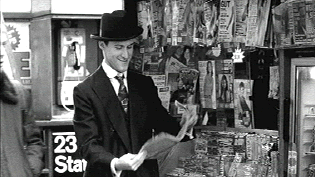

| Man of the Century (SE)/ B+, A- |
| Fine Line/1999/77/ANA 1.85/BW |
Bouncing through contemporary New York City
streets to Cole Porter rhythms, news reporter Johnny Twennies is
spiritually a man from another time. Everything about Johnny is 1920s hip,
cool, innocent and distilled with bootleg drollery. Johnny talks jive,
sees everything with eyes filtered by another set of moral values. The key
is that this is not an affectation but Johnny can only see things colored
through anachronistic glasses. The quaint and delightful idea is
delivered with jaunty glee by writers Gibson Frazier and Adam Abraham and affectionately infused with tons of throwaway period
details by director Adam Abraham.
 |
|
Johnny admires his own
by-line. ©Fine Line
|
Johnny is a great character. He loves what he does and
who he is and hasn't a clue that he's out of synch with the rest of New
York City. Some of the looks he gets from people are precious. But Johnny
is oblivious to the off reaction, ignores the contemporary comeback. I
never tired of Man of the Century's key gimmick. It's delivered
with professional consistency.
Man of the Century takes off on wings of inspiration and
much of it plays out in perfect tempo to the initial scoring. It does slog
through some awkward scripting. Too much is left to the gimmick when a
sharper pencil would have taken Johnny all the way into the end
zone. Still, the originality and verve of
execution delivers Man of the Century like a loaded dice,
rolling sevens against improbable odds. Some repetitions creep into the
game plan, but it shouldn't discourage you; it didn't stop me from
enjoying most moments.
Gibson Frazier gets Man of the Century's
movie medal of
honor for his blitheful portrayal of Johnny. Frazier is a hoot. His
every movement defines Johnny, emphasizing the past with a strut
energized by confidence. The rest of the cast is given less magic to pull
from their acting duffel bags, but no one stands out like a 1920s man in
contemporary New York, except Johnny of course.
Man of the Century is a seventy-seven minute glass of
effervescent champagne. The comic bubbles burst with celebration of a past
inebriated with a joy of life.
This is quite a handsome transfer. Even the initial
simulated silent movie material looks perfectly authentic. The anamorphic
black and white widescreen images are creamy delicious. The DVD had a very
nice gray scale range. Excellent contrast delivers deep blacks and clean
whites. Consistently sharp, I did not detect any undue NTSC artifacts in
the transfer. A few scenes might have extracted a mite more resolution
from the source material, but that's debatable. Shadow detail is
everything you could ask for and overall light output is outstanding.
Viewed on a 6500K monitor, or better yet, a 5400 black and white
calibration setting, Man of the Century stands up to its title. The Dolby Digital
5:1 tracks deliver clear dialogue and upbeat music.
Packaged as a special edition, Man of the Century
includes commentary by star and co-writer Gibson Frazier, a
behind-the-scenes featurette "pop up" notes and a Johnny
Twennies glossary. There are also scripted deleted and alternate scenes.
Our review DVD did not include any of the extras so we cannot comment on
them.
|
|
|
|

Selections from the Feature
Archive include articles on Akira Kurosawa, Frank Darabont, Blonde Bimbos, Hollywood Street Gangs, or Vietnam: The Hollywood Pariah, and many
more....
Sturges Emerges

Preston Sturges was Hollywood's resident comic genius for
more than a decade. His movies are timeless. Click on his image to read
all about it.

Ghost World/ A, A

Ghost World may be one of the finest movies about outsider I have
ever seen. Splendid work from Thora Birch and maybe the best Steve
Buscemi ever. A stunning transfer.

 Have you visited Home Theater
Talk lately? One of the friendliest places on the Net for
Home Theater and DVD discussion, you can get help for installation
problems or simply share your opinions with other Vidiots. Have you visited Home Theater
Talk lately? One of the friendliest places on the Net for
Home Theater and DVD discussion, you can get help for installation
problems or simply share your opinions with other Vidiots.

ISF Monitor
Calibrations in the Tristate New York area. Lots of hardware
info and frequent hardware peaks from video expert Kevin Miller. They
may be judgmental, but that's the point, isn't it. Lots of DVD reviews
plus news and more.

ISF presenter and industry consultant Jim Burns provides info and
HDTV and other areas on his site.

Rent the hottest movies at DVDO with no monthly charges, late fees or
due dates! Upgrade your free membership anytime to our exclusive Double Feature
Club
|